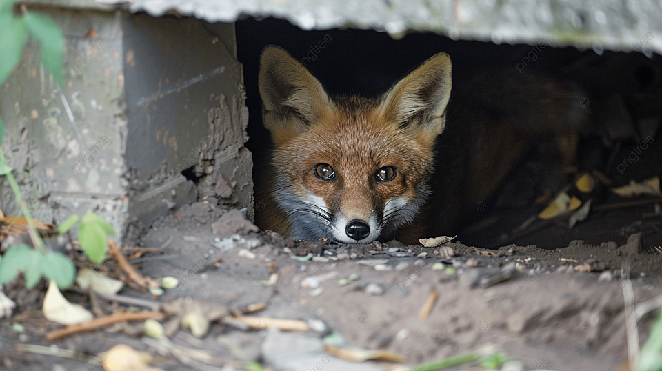

Tu instinto de supervivencia gana. Retiras tu pata inmediatamente y corres hacia el bosque sin mirar atrás. El pescador llega segundos después, pero solo encuentra su trampa intacta.
Te escondes entre los arbustos, tu corazón latiendo furiosamente. Estuviste tan cerca del desastre. Tu cuidadora tenía razón - las trampas humanas son demasiado peligrosas.
Después de que el pescador se va, te das cuenta de algo: aprendiste una lección importante sin pagar un precio terrible. La impaciencia casi te cuesta la libertad.
Decides alejarte del río y buscar un territorio más seguro, lejos de las trampas humanas. Hay otros lugares donde un zorro puede vivir.
Buscar un territorio pequeño y seguro - ya tuviste suficiente aventura
Ir hacia las colinas lejanas - comenzar completamente de nuevo